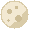
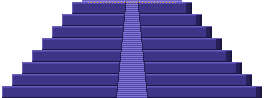
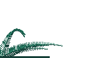
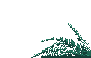

Vasito de café
Tapa negra y faja marrón, como el de la cafetería.




Impresión 3D en Montevideo
Clickers, autos para armar, ajedrez, cosas de One Piece y Minecraft. Elegí del catálogo o mandame una foto de lo que querés.
Tocá «Lo quiero» en lo que te guste y el mensaje de WhatsApp se arma solo. Me lo mandás y te paso precio y fecha, sin compromiso.
Si tocás una foto, la ves grande.
Se aprietan y hacen clic. Para tener en la mano mientras esperás o estudiás. También hago flexis, torres de dados y contadores para Magic: preguntame.
Tapa negra y faja marrón, como el de la cafetería.
Media pelada. Esta no se pone negra.
En su macetita. No hay que regarla.
Trae argolla para colgarla de las llaves.
Se asoma por la cáscara.
Verde, sentada en una flor rosada.
Marrón, en su canasta trenzada.
Una lata de refresco, en rojo.
Con un marcianito verde adentro.
La lata de siempre, en chiquito.
Marrón y con cara de contento.
Para armar o para la repisa. Varios doblan cuando girás el volante. Fotos de los diseñadores.
Escala 1:19. Se arma por partes, con faros y frenos.
Escala 1:19. Girás el volante y doblan las ruedas.
Escala 1:19. También dobla con el volante.
Descapotable, y dobla con el volante.
Mide 23 cm y encastra sin pegamento.
Escala 1:32. Se ven el piloto y el motor.
El del 67, con franjas de carrera.
El del 65, descapotable.
Escala 1:20. Adentro tiene asientos y volante.
Tiene partes que se sacan.
Con la tabla de surf en el techo.
Las ruedas giran. Es todo impreso, no lleva nada comprado.
Para sacar los Hot Wheels y los Matchbox de la caja y tenerlos a la vista. Todos son para escala 1:64, menos el estante 1:32. Fotos de los diseñadores.
Entran 6 autitos. Se cuelga y se puede apilar.
Celdas que se enganchan. Si crece la colección, le sumás más.
Dos columnas de celdas, para la pared.
Tres módulos de pared en una pieza, con fondo.
Cuando te quedás sin lugar, le agregás un piso.
Copia del ascensor de autos del museo de Audi. No sube: es para mirar.
Muestra el auto al lado de su caja.
Los módulos se encastran de costado y la fila sigue.
Para un solo auto: el preferido.
Estantes finitos, un auto en cada uno.
Para autos más grandes, de escala 1:32.
Casi todos son solo las piezas, sin tablero. El tablero también lo imprimo, aparte. Fotos de los diseñadores.
Caballeros con armadura y torres de castillo. Más de 10 horas de impresora.
Otra versión del medieval, con más detalle en cada pieza.
Reyes con espada y reinas con escudo.
Minotauro contra Hércules. Este sí trae tablero: 52 × 50 cm.
Con Harry, Hermione, Ron y el Sombrero Seleccionador.
Piezas de unos 5 cm y una caja para llevarlas.
Con X-Wings, AT-ST y tauntauns. Son piezas delicadas.
Trae tablero y caja para guardar todo.
Los gatos de un lado, los perros del otro. Vos elegís bando.
Se pliega en un tubo de 24 cm con las piezas adentro.
Piezas lisas, sin adornos.
Rey de 8 cm. Tiene lugar para imanes.
Tamaño reglamentario. Se arma por partes y no trae piezas.
Las 28 fichas, con su caja.
Todo esto salió de mi impresora, y las fotos las saqué yo.
El barco de Luffy. Lo imprimí por partes y lo armé yo.
Cerca de 200 piezas, armadas una por una.
El bote de Ace, sobre una base de olas.
El submarino del Sunny, con dientes y todo.
Gomu Gomu, Mera Mera, Ito Ito y otras, con su soporte.
Vienen con sus espadas.
Hello Kitty con armadura de robot.
Plateada, para ponértela con el disfraz.
Acá también están el ajedrez de Minecraft y el de Star Wars.
Con la mecha arriba.
28 cm. Mueve las alas, las patas y la cola.
Girás la manija y andan las vagonetas y el bote.
Un arbolito de Minecraft en su maceta.
Es una caja: la torta es la tapa.
Ranura arriba. La tapa se saca para vaciarla.
Trae tablero y caja para guardar todo.
Cúpula azul y plateada, para la repisa.
La nave de Darth Vader, sobre su base.
A medio construir, como en El retorno del Jedi.
Los AT-AT avanzando en la nieve.
Con X-Wings, AT-ST y tauntauns. Son piezas delicadas.
Guarda un mazo y parece una Game Boy.
El gatito verde de Pokémon, recién salido de la impresora.
Los estadios los imprimí yo, y las fotos son mías.
El Campeón del Siglo, con las tribunas y el nombre.
El Gran Parque Central, con el nombre del club.
Un avión a radiocontrol sin cola. Se imprime en partes.
Para volar en el campito.
Para hacer trucos con dos dedos arriba de la mesa.
Para grindear con el skate de dedo.
Para el balcón, el fondo o la huerta. Si va al sol, conviene PETG: preguntame. Fotos de los diseñadores.
Tiene forma de hoja y se cuelga de una rama.
Abierto y con techito. Se cuelga o se apoya.
La bandeja de las semillas sale para lavarla.
Comen varios pájaros a la vez.
Parece madera de playa. Se abre por atrás para limpiarla.
Lisa, para colgar de una rama.
Para pájaros chicos.
Se enrosca en una botella. Las abejas toman sin ahogarse.
Parece de tela acolchada. Es para macetas de 9 cm.
Va en la punta de un palo y corta la fruta de arriba. La hoja de cutter no viene.
Cosas raras y útiles para la casa. Fotos de los diseñadores.
Un estante de pared que parece que gotea.
Para dejar las llaves cuando llegás.
24 × 15 cm. Se le puede poner una luz adentro (la luz no viene).
Sostiene el libro abierto y tiene cajones.
Para Halloween, o para todo el año.
Para gatos medianos. Un ratito para la foto, y con vos al lado.
A medida
Mandame una foto, un dibujo o el link de un modelo, con las medidas. Si se puede imprimir, te digo cuánto sale y para cuándo. Si no se puede, también te aviso.
Impresora: una Bambu Lab A1, con cargador de cuatro bobinas.
Tamaño: hasta 25 cm por lado en una sola pieza. Si es más grande, lo hago en partes.
Material: PLA para adentro. PETG para afuera o para algo que tenga que aguantar.
Colores: hasta cuatro en la misma pieza.
Tenemos precios súper accesibles. Cada precio se calcula según el peso y el tiempo de impresión de tu proyecto, y te lo pasamos antes de empezar.
Todos los pedidos tienen un mínimo de 48 horas de preparación. La fecha exacta te la pasamos junto con el precio.
Sí. Tenemos una gran variedad de colores y efectos especiales, únicos. Preguntanos qué hay disponible.
Sí: STL, 3MF u OBJ, o el link del modelo en MakerWorld o Printables.
Sí. Sin costo en La Unión, La Blanqueada y parte de Buceo. Al resto del país también mando: el costo del envío te lo paso con el precio.
Tu mensaje
Hola, vi la web y te quiero consultar algo.
Todavía no elegiste nada. Mandalo igual y contame qué buscás.